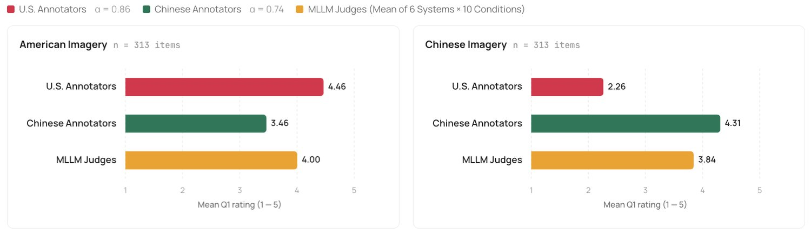
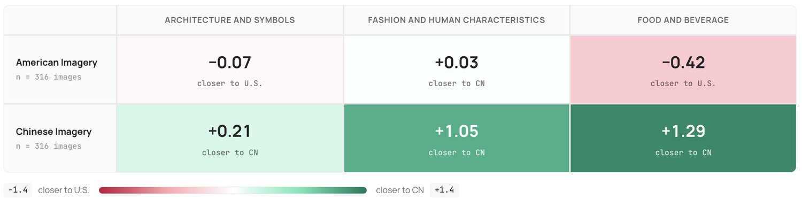
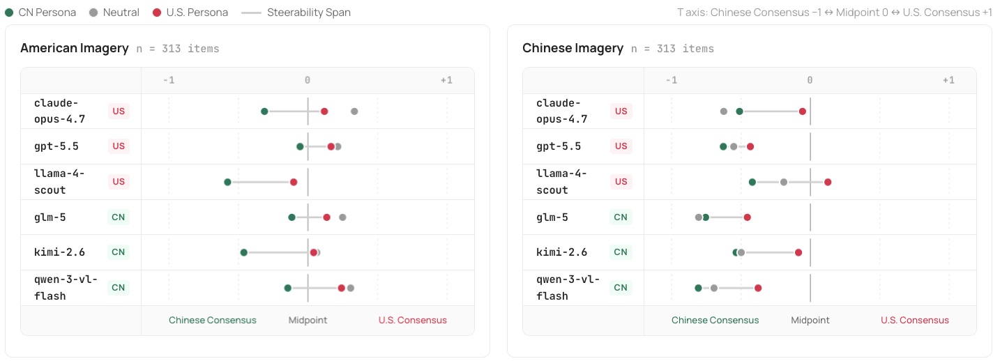

Jury Duty: Calibration and Orientation Failures in MLLM-as-a-Judge Under Cultural Ambiguity
MLLM-as-a-Judge is conventionally validated by agreement with human annotations, but agreement against a culturally heterogeneous pool is pool-dependent: it silently conditions on whose judgments the aggregate represents. We introduce VOIR DIRE, a multimodal benchmark of 626 culturally paired image–prompt items spanning U.S. and mainland Chinese contexts across food, fashion, and architecture, with annotator pools that are within-pool reliable () but cross-pool divergent on evaluation (Q1 ). Across six MLLMs, the bias decomposes into two failures: a positivity-floor calibration failure (compressed scale use) and an orientation failure (default to one cultural norm). On this corpus, where contested items are sampled to split the two pools, the floor mechanically validates the more-permissive Chinese reading; persona prompting partially recovers calibration, but the orientation residual survives, evidence the tilt is not reducible to scale compression. Reference-pool in-context demonstrations deepen the orientation residual and inflate the high end rather than restoring use of the low end. Model origin adds a small additive tilt ( MAE) that is approximately invariant under demonstration. We recommend reporting alignment against each reference pool separately and treating cross-pool divergence as a judge property.
LLM-as-a-Judge Zheng et al. (2023), along with multimodal adaptations such as MLLM-as-a-Judge Chen et al. (2024a) and fine-tuned judge models Xu et al. (2026); Wang et al. (2025); Zhu et al. (2025); Kim et al. (2024), has become a widely used framework for evaluating open-ended generation, summarization, image generation, and other tasks where reference-based metrics are limited. These approaches are cost-effective and scalable Dubois et al. (2024), and are conventionally validated by measuring agreement with human annotations or preferences Liu et al. (2023).
LLM 即评判者（LLM-as-a-Judge）Zheng 等（2023），连同 MLLM 即评判者（MLLM-as-a-Judge）Chen 等（2024a）以及微调评判模型 Xu 等（2026）；Wang 等（2025）；Zhu 等（2025）；Kim 等（2024）等多模态变体，已成为评估开放式生成、摘要、图像生成以及其他基于参考的指标力有未逮的任务时广泛采用的框架。这些方法成本低廉、可扩展 Dubois 等（2024），通常通过与人类标注或偏好的一致性来加以验证 Liu 等（2023）。
图 1：概念配对刺激示例。每一对共享同一条评估提示，分别施加于一张美国对齐图像与一张中国大陆对齐图像，涵盖餐饮、时尚与人物特征两个类别。
Validation by human agreement, however, does not specify whose judgments a model approximates Santurkar et al. (2023); DURMUS et al. (2024). The distinction is consequential in preference-sensitive settings, where evaluations turn on plausibility, appropriateness, or desirability Ye et al. (2024) rather than verifiable correctness. Unlike tasks like code generation that is evaluated against unit tests Chen et al. (2021), such judgments admit multiple defensible answers, and cross-annotator differences may reflect distinct norms or values rather than error Pavlick and Kwiatkowski (2019).
然而，以人类一致性做验证并不指明模型在逼近谁的判断 Santurkar 等（2023）；DURMUS 等（2024）。这一区分在偏好敏感的设置中至关重要：此类评测取决于合理性、恰当性或合意性 Ye 等（2024），而非可验证的正确性。与依据单元测试来评判的代码生成 Chen 等（2021）这类任务不同，此类判断容许多个可辩护的答案，标注者之间的差异可能反映的是不同的规范或价值，而非错误 Pavlick 和 Kwiatkowski（2019）。
Consider a culturally ambiguous case: U.S. contexts associate convenience-store food with low quality, while mainland Chinese contexts treat it as a source of fresh, reliable prepared meals. A judge evaluating such a scene draws on culturally situated expectations of plausibility and desirability, not just factual knowledge. Evaluations that appear culturally neutral are not: they reflect cultural assumptions the judge does not declare and the metric does not surface.
试看一个具有文化模糊性的例子：美国语境把便利店食品与低品质联系在一起，而中国大陆语境则把它视为新鲜、可靠的现制餐食来源。评判者评估这类场景时，调用的是关于合理性与合意性的文化情境化预期，而不只是事实性知识。那些看似文化中立的评估并非如此：它们反映的是评判者未曾申明、指标也未呈现出来的文化假设。
Prior work on cultural bias in multimodal models has largely documented misrepresentation in generation Naous et al. (2024); Liu et al. (2025); whether such biases also shape evaluation, where model preferences are not visible as outputs but folded into scalar scores, has received less attention. The setting is structurally consequential: judge outputs propagate as training signal in RLAIF and judge-distilled benchmarks, and as ground truth in leaderboards, so cultural lean in a judge becomes cultural lean in a metric for the next training cycle. The concern is amplified for MLLMs developed in distinct regional markets (e.g., Claude, GPT, Llama in the U.S.; Qwen, Kimi, GLM in mainland China) and for multimodal evaluation, where culturally specific meanings are conveyed through visual cues Nayak et al. (2024); Li et al. (2024c); Kim et al. (2025).
以往关于多模态模型文化偏见的工作，大多记录生成中的错误表征 Naous 等（2024）；Liu 等（2025）；而这类偏见是否也影响评估——此时模型偏好并不作为输出可见，而是被折叠进标量分数——则较少受到关注。这一设置在结构上意义重大：评判者的输出在 RLAIF 与评判者蒸馏基准中作为训练信号传播，在排行榜中作为真值传播，于是评判者中的文化倾斜会变成下一个训练周期中指标里的文化倾斜。对于在不同区域市场开发的 MLLM（如美国的 Claude、GPT、Llama；中国大陆的 Qwen、Kimi、GLM），以及对于文化特定含义通过视觉线索传达的多模态评估 Nayak 等（2024）；Li 等（2024c）；Kim 等（2025），这一担忧更为突出。
We investigate this through VOIR DIRE,11 1 Named after the legal process of questioning prospective jurors to uncover hidden bias before trial. a multimodal benchmark comparing MLLM-as-a-Judge alignment with culturally distinct human reference pools. Our contributions are threefold. (1) We release VOIR DIRE, a benchmark of 626 culturally paired image–prompt items spanning U.S. and mainland Chinese contexts, with a construction protocol and validity argument that establish cultural ambiguity as a property of items rather than asserting it. (2) We analyze MLLM-as-a-Judge alignment against culturally distinct reference pools, varying language, cultural persona, model origin, and reference-pool in-context demonstrations. (3) We argue that alignment under cultural ambiguity should be reported against multiple reference pools, with cross-pool divergence (which neither persona prompting nor reference-pool ICL removes) treated as a property of the judge rather than as noise.
我们通过 VOIR DIRE11 1 得名于庭审前对候任陪审员进行询问、以揭示其隐藏偏置的法律程序。来研究这一问题，它是一个多模态基准，用于比较 MLLM 即评判者与文化上不同的人类参照池之间的对齐程度。我们的贡献有三个方面：(1) 发布 VOIR DIRE，一个包含 626 个文化配对的图像—提示条目的基准，覆盖美国与中国大陆语境，并配有构建协议与有效性论证，把文化模糊性确立为条目自身的属性，而非仅仅加以断言；(2) 我们分析 MLLM 即评判者与文化上不同的参照池之间的对齐，变化语言、文化角色、模型来源与参照池上下文示例等条件；(3) 我们认为，文化模糊性下的对齐应当针对多个参照池分别报告，并把跨池分歧（角色提示与参照池 ICL 都无法消除）视为评判者的属性，而非噪声。

图 2：按评判者类型与图像文化划分的 Q1 平均评分（1–5；）。MLLM 均值在美国图像上与美国共识一致，在中国图像上与中国共识一致。
Using language models as evaluators has become a common technique for tasks where reference-based metrics fall short. Zheng et al. (2023) introduced the LLM-as-a-Judge framework with MT-Bench and Chatbot Arena, showing that strong models like GPT-4 OpenAI et al. (2024) approximate human pairwise preferences across conversational tasks. The paradigm has since been extended to tasks like summarization, instruction following, and long-form QA Fu et al. (2024); Pradeep et al. (2024); Dubois et al. (2023); Min et al. (2023), and is now embedded in major leaderboards Chiang et al. (2024) and RLHF pipelines Lee et al. (2024).
用语言模型充当评估者，已成为基于参考的指标力有未逮的任务中常见的技术。Zheng 等（2023）用 MT-Bench 与 Chatbot Arena 引入 LLM 即评判者框架，表明 GPT-4 OpenAI 等（2024）等强模型能在对话任务上逼近人类的成对偏好。此后，该范式被扩展到摘要、指令遵循与长文本问答等任务 Fu 等（2024）；Pradeep 等（2024）；Dubois 等（2023）；Min 等（2023），如今已嵌入主流排行榜 Chiang 等（2024）与 RLHF 流程 Lee 等（2024）。
Multimodal extensions Chen et al. (2024a) target outputs where metrics like CIDEr Vedantam et al. (2015) and CLIPScore Hessel et al. (2021) miss higher-level qualities such as grounding and instruction following. MLLM-as-a-Judge benchmarks frontier models on scoring, pairwise, and ranking tasks, while LLaVA-Critic Xiong et al. (2024) and VLFeedback Li et al. (2024b) train open multimodal critics. A parallel line fine-tunes open judges on synthetic or human preference data, including Auto-J Li et al. (2024a), JudgeLM Zhu et al. (2025) and FARE Xu et al. (2026), and a third uses in-context demonstrations as a calibration mechanism for evaluator models. Across all three settings, judges are predominantly validated against aggregate human agreement, without specifying which population is being approximated.
多模态扩展 Chen 等（2024a）针对的是 CIDEr Vedantam 等（2015）与 CLIPScore Hessel 等（2021）等指标遗漏了视觉定位、指令遵循等更高层品质的输出。MLLM 即评判者在打分、成对比较与排序任务上对前沿模型做基准评测，而 LLaVA-Critic Xiong 等（2024）与 VLFeedback Li 等（2024b）训练开放的多模态评论模型。另一条并行的路线在合成或人类偏好数据上微调开放评判者，包括 Auto-J Li 等（2024a）、JudgeLM Zhu 等（2025）与 FARE Xu 等（2026）；第三条则把上下文示例用作评估者模型的校准机制。在这三类设置中，评判者几乎都以聚合的人类一致性来验证，而不指明被逼近的是哪一个人群。
Despite high aggregate agreement with humans, judges exhibit systematic biases including position Wang et al. (2024), length Panickssery et al. (2024), self-preference Panickssery et al. (2024), and stylistic sensitivity Chen et al. (2024b). More broadly, language and multimodal models display social biases along gender, race, and political axes Gallegos et al. (2024), and reproduce stereotypes in generated images, captions, and visual reasoning Bianchi et al. (2023).
尽管与人类的聚合一致性很高，评判者仍表现出系统性偏见，包括位置偏见 Wang 等（2024）、长度偏见 Panickssery 等（2024）、自我偏好 Panickssery 等（2024）以及文体敏感 Chen 等（2024b）。更广泛地说，语言与多模态模型在性别、种族与政治轴上表现出社会偏见 Gallegos 等（2024），并在生成的图像、描述与视觉推理中复现刻板印象 Bianchi 等（2023）。
Cultural bias is also well documented: LLMs disproportionately reflect WEIRD Henrich et al. (2010), English-language, and U.S.-centric perspectives Ramezani and Xu (2023), with measurable gaps in cross-country opinion representation Santurkar et al. (2023) and inconsistent alignment across languages AlKhamissi et al. (2024). Text-to-image systems underrepresent non-Western geographies and stereotype cultural concepts Basu et al. (2023); Lee et al. (2025), while VLMs perform unevenly on culturally grounded VQA Romero et al. (2024). Benchmarks such as CulturalBench Chiu et al. (2025) and BLEnD Myung et al. (2024) formalize this line of evaluation across varying cultural regions.
文化偏见同样有充分记录：LLM 不成比例地反映 WEIRD Henrich 等（2010）、英语以及以美国为中心的视角 Ramezani 和 Xu（2023），在跨国意见表征上存在可测量的落差 Santurkar 等（2023），且跨语言的对齐不一致 AlKhamissi 等（2024）。文生图系统对非西方地理表征不足，并对文化概念做刻板化处理 Basu 等（2023）；Lee 等（2025），而 VLM 在具有文化根基的视觉问答上表现不均 Romero 等（2024）。CulturalBench Chiu 等（2025）与 BLEnD Myung 等（2024）等基准把这条评估路线在不同文化区域上加以形式化。
Most of this work examines what models produce rather than how they evaluate. A small but growing body of work probes judge behavior along non-cultural social axes and across languages Hada et al. (2024). We extend this inquiry to multimodal judgment in culturally ambiguous, preference-sensitive scenarios, comparing judges associated with different cultural contexts against culturally aligned human annotations.
这些工作大多考察模型产出什么，而非它们如何评估。一小部分但正在增长的工作沿非文化的社会轴以及跨语言探查评判者行为 Hada 等（2024）。我们把这一探问扩展到文化模糊、偏好敏感场景中的多模态判断，把与不同文化语境相关联的评判者同文化对齐的人类标注做比较。
We introduce VOIR DIRE, a multimodal benchmark that quantifies the divergence between MLLM-as-a-Judge alignment and culturally distinct human reference pools under preference-sensitive ambiguity. Each item pairs an image with an evaluation prompt whose appropriate response hinges not on verifiable ground truth but on culturally situated evaluative expectations widely shared within one cultural context but not the other. We evaluate MLLMs under various conditions (Section 3.2) and benchmark their judgments against culturally matched annotations from independent U.S. and Chinese annotator pools.
我们提出 VOIR DIRE，一个量化 MLLM 即评判者的对齐在偏好敏感模糊性下如何随文化上不同的人类参照池而分裂的多模态基准。每个条目把一张图像与一条评估提示配对，其恰当回应并不取决于可验证的真值，而取决于在一种文化语境中被广泛共享、在另一种中并非如此的文化情境化评估预期。我们在多种条件下评估 MLLM（第 3.2 节），并把它们的判断与来自独立的美国与中国标注者池的文化匹配标注做基准比较。
VOIR DIRE comprises 626 items balanced between U.S.- and mainland-Chinese-aligned concepts (313 each), spanning two cultural contexts each represented by frontier MLLMs developed for a distinct linguistic and regional market (Section 3.2). Within each context, items span three categories in culturally specific cues Kim et al. (2025); Nayak et al. (2024): food and beverage (147 per culture), fashion and human characteristics (64 per culture), and architecture and symbols (102 per culture). Items are concept-paired: each U.S.-aligned item has a mainland-Chinese counterpart with a matching referent (e.g., U.S. and mainland-Chinese realizations of a celebratory meal; Figure 1).
VOIR DIRE 包含 626 个条目，在美国对齐与中国大陆对齐的概念之间均衡分布（各 313 个），跨越两种文化语境，每种语境由面向特定语言与区域市场开发的前沿 MLLM 所代表（第 3.2 节）。在每种语境内，条目跨越三个承载文化特定线索的类别 Kim 等（2025）；Nayak 等（2024）：餐饮（每种文化 147 个）、时尚与人物特征（每种文化 64 个）、建筑与符号（每种文化 102 个）。条目是概念配对的：每个美国对齐条目都有一个中国大陆对应项，二者指称对象相匹配（例如庆祝性餐食的美国实现与中国大陆实现；图 1）。
All images in VOIR DIRE are produced with Gemini 3 Pro Image (Google DeepMind, 2026a). We use generated rather than naturalistic imagery because real photographs vary in aesthetic quality, lighting, composition, and learned human-preference signatures that influence evaluative ratings independently of the depicted subject (Murray et al., 2012; Kong et al., 2016; Kirstain et al., 2023; Xu et al., 2023). Each concept-paired generation uses matched parameters (same model, aspect ratio, lighting and composition register), so the only visual variable that differs across a pair is the cultural cue. Generator-imprinted signatures cannot drive the cross-pool divergence reported in Section 4: such signatures would elicit shared rather than divergent responses across pools. A 30-pair naturalistic-photo replication reproduces the cross-pool Q1 divergence and the asymmetric judge bias at attenuated magnitudes (Appendix A). We observe agreement on depicted content (Q2 placement at to , or – of the scale maximum) and disagreement on evaluation (cross-cultural Pearson on Q1).
VOIR DIRE 中所有图像均由 Gemini 3 Pro Image 生成（Google DeepMind, 2026a）。我们使用生成图像而非自然图像，是因为真实照片在美学质量、光照、构图以及习得的人类偏好特征上存在差异，这些因素会独立于所描绘主体而影响评估评分（Murray 等, 2012；Kong 等, 2016；Kirstain 等, 2023；Xu 等, 2023）。每对概念配对生成使用匹配的参数（同一模型、宽高比、光照与构图风格），因此一对之间唯一不同的视觉变量就是文化线索。生成器留下的特征印记不可能驱动第 4 节报告的跨池分歧：这类印记在两个池之间引发的会是共享而非分歧的回应。一项 30 对的自然照片复现实验在减弱的量级上重现了跨池 Q1 分歧与非对称的评判者偏见（附录 A）。我们观察到在所描绘内容上的一致（Q2 定位在 至 ，即 量表最大值的 –），以及在评估上的分歧（Q1 上的跨文化 Pearson ）。
Prompts are authored by three bicultural expert annotators on a construction pool disjoint from the evaluation pool (Section 3.1.4), under a rotating author/reviewer protocol. Iterative refinement ensures that prompts (i) elicit evaluative judgments rather than factual lookups, (ii) are plausibly contestable across cultures, and (iii) avoid surface-level stereotypes (Appendix G).
提示由三名双文化专家标注者撰写，他们来自与评估池不相交的构建池（第 3.1.4 节），采用轮转的作者/审阅者机制。迭代打磨确保提示 (i) 引出评估性判断而非事实检索，(ii) 在跨文化上确实可争，(iii) 避免表层刻板印象（附录 G）。

图 3：跨池倾斜 集中在中国图像的餐饮以及时尚与人物特征上；建筑与符号接近中性。
Items in VOIR DIRE were annotated by five U.S. and five mainland-Chinese bicultural-fluent annotators (ten total), compensated at $20 per hour. The bicultural-fluency requirement makes Q2 cultural placement informative for both pools and likely attenuates the cross-pool Q1 divergence relative to a monocultural design. For each task, annotators answer four questions (Appendix D):
VOIR DIRE 中的条目由五名美国与五名中国大陆的双文化流利标注者（共十名）标注，报酬为每小时 20 美元。双文化流利的要求使 Q2 的文化定位对两个池都具有信息量，并可能相对单文化设计减弱跨池 Q1 分歧。对每个任务，标注者回答四个问题（附录 D）：
Evaluative response. Respond to the prompt about the image on a 5-point ordinal scale.
Q1. 评估性回应。按 5 点有序量表回应关于图像的提示。
Cultural alignment. Rate the item on a 5-point Chinese to American scale.
Q2. 文化对齐。按 5 点的「中国到美国」量表对该条目评分。
Subjectivity. Rate the Q1 prompt on a 5-point scale based on subjectivity.
Q3. 主观性。按 5 点量表依据主观性对 Q1 提示评分。
Cross-cultural recognizability. Rate on a 5-point scale how likely someone from the other cultural context is to understand the rationale behind the Q1 answer.
Q4. 跨文化可识别性。按 5 点量表评分：来自另一文化语境的人有多大可能理解 Q1 答案背后的理由。
Q4 proxies how widely a cultural reference has diffused across contexts, and how likely it might appear in training corpora. We use it to contextualize judge behavior across model origins.
Q4 代理衡量一个文化指称在跨语境中扩散得有多广，以及它出现在训练语料中的可能性有多大。我们用它来把不同模型来源的评判者行为置于语境中考察。
We evaluate six MLLMs: claude-opus-4.7, gpt-5.5, and llama-4-scout from U.S. developers; glm-5, kimi-k2.6, and qwen-3-vl-flash from mainland-Chinese developers Anthropic (2026); OpenAI (2026); Meta AI (2025); Z.ai (2026); Moonshot AI (2026); Qwen (2025). Each model rates every item under ten prompt conditions: two neutral (no persona; English and simplified Chinese) and eight persona conditions crossing persona detail (basic vs. advanced), persona culture (American vs. Chinese), and prompt language (English vs. Simplified Chinese), yielding judgment cells. Simplified Chinese prompts were translated with Gemini 3.1 Pro and verified by a bilingual member of the construction pool Google DeepMind (2026b). Full prompt and model details are in Appendices F and E.
我们评估六个 MLLM：来自美国开发者的 claude-opus-4.7、gpt-5.5 与 llama-4-scout；来自中国大陆开发者的 glm-5、kimi-k2.6 与 qwen-3-vl-flash Anthropic（2026）；OpenAI（2026）；Meta AI（2025）；Z.ai（2026）；Moonshot AI（2026）；Qwen（2025）。每个模型在十种提示条件下为每个条目评分：两种中性条件（无角色；英文与简体中文），以及八种角色条件，由角色详略（基础 vs. 进阶）、角色文化（美国 vs. 中国）与提示语言（英文 vs. 简体中文）交叉而成，共产生 个判断单元。简体中文提示由 Gemini 3.1 Pro 翻译，并由构建池中的一名双语成员校验 Google DeepMind（2026b）。完整提示与模型细节见附录 F 与 E。
We additionally evaluate four in-context learning (ICL) conditions, formed by crossing demonstration annotator pool (U.S. vs. mainland-Chinese) with example imagery (American- vs. mainland-Chinese-aligned). Each ICL call prepends five (image, rating) demonstrations sampled one per Likert level 1–5 from a held-out pool disjoint from the 626 test items, then applies the baseline prompt. The four designs add cells (187,800 total).
我们额外评估四种上下文学习（ICL）条件，由示例标注者池（美国 vs. 中国大陆）与示例图像（美国对齐 vs. 中国大陆对齐）交叉构成。每次 ICL 调用前置五个（图像, 评分）示例，这些示例从与 626 个测试条目不相交的留出池中按 Likert 1–5 每个等级各采样一个得到，然后套用基线提示。这四种设计新增 个单元（总计 187,800）。
VOIR DIRE’s central validity claim is that items are within-pool reliable but cross-pool divergent in evaluation, with the corpus splitting into anchors and contested probes used in Section 4 to separate cultural bias from item difficulty.
VOIR DIRE 的核心有效性主张是：条目在池内可靠，却在评估上跨池分歧，且语料分裂为锚点与争议探针，供第 4 节把文化偏见与条目难度区分开来。
Krippendorff’s on Q1 (ordinal distance) is (U.S.) and (Chinese), exceeding the and thresholds for definitive and tentative conclusions.
Q1 上的 Krippendorff （有序距离）为 （美国）与 （中国），超过确定性结论 与暂定性结论 的阈值。
Per-image Pearson on Q1 between U.S. and Chinese consensus is (95% CI ); mean absolute difference is on the 1–5 scale, reaching in the highest-divergence stratum (Chinese food items). The slight negative sign is informative: items rated higher by the U.S. pool are rated slightly lower by the Chinese pool, rather than the two pools being merely unrelated. Reliable within-pool agreement does not translate into cross-pool agreement. Because contested items are sampled to split the pools, on each one pool’s reading is more permissive than the other’s; the corpus-independent claim of this paper is the existence of an orientation residual after calibration is corrected (§4.3), while the sign of the residual on this corpus reflects which pool is the more-permissive on the contested majority of items.
Q1 上美国与中国共识之间的逐图 Pearson 为 （95% CI ）；1–5 量表上的平均绝对差为 ，在分歧最大的层（中国餐饮条目）达到 。轻微的负号具有信息量：美国池评分较高的条目，中国池评分略低，而不是两个池仅仅互不相关。可靠的池内一致并未转化为跨池一致。由于争议条目是按能分裂两个池的标准抽样的，在每一个争议条目上，总有一个池的解读比另一个更宽容；本文不依赖于具体语料的论断是：在校准被纠正之后，取向残差依然存在（§4.3），而该残差在本语料上的符号则反映在争议条目占多数时哪个池更宽容。
On Q2, American items are placed at (U.S.) / (Chinese) and Chinese items at / —sign-identical, with the smallest absolute placement () at of scale maximum. Q3 confirms items as evaluative: (U.S.) and (Chinese) received Q3 (subjective on the 1–5 scale where 1 is most subjective). The cross-pool Q1 disagreement cannot be attributed to either pool failing to recognize content.
在 Q2 上，美国条目被定位于 （美国）/ （中国），中国条目为 / ——符号一致，最小的绝对定位（）为量表最大值的 。Q3 确认条目具有评估性：（美国）与 （中国）获得了 Q3 （1–5 量表上 1 为主观性最强）。跨池 Q1 分歧无法归因于任一池未能识别内容。
Ambiguity is graded rather than uniform: within-stratum cross-pool Pearson ranges from to . Defining an item as a cultural anchor if both pool consensuses are (high anchor) or both (low anchor), and a contested probe otherwise, yields 227 high anchors, 39 low anchors, and 360 contested probes. Combining both within a single instrument is what allows Section 4 to attribute judge behavior to cultural bias rather than item difficulty.
模糊性是分级的而非均一的：层内跨池 Pearson 从 到 不等。若两个池的共识均为 （高锚点）或均为 （低锚点），则把该条目定义为文化锚点，否则定义为争议探针，由此得到 227 个高锚点、39 个低锚点与 360 个争议探针。把二者纳入同一份工具，正是第 4 节能把评判者行为归因于文化偏见而非条目难度的原因。
We characterize how the six MLLM judges align with the U.S. and Chinese reference pools. Four claims structure the analysis: a positivity-floor calibration failure that, on this corpus, manifests as a Chinese-leaning lean (§4.1), a variance decomposition with a small origin tilt (§4.2), persona prompts that steer asymmetrically and leave a residual (§4.3), and reference-pool demonstrations that deepen rather than correct it (§4.4). For each model and condition we compute alignment with each pool (us-Pearson, us-MAE; cn-Pearson, cn-MAE) together with two tilt measures. The MAE-based tilt summarizes alignment-error asymmetry; positive values indicate that the judge fits the Chinese reference more closely. The normalized cultural tilt summarizes placement on the ordinal rating scale itself, anchored at for the Chinese human consensus and for the U.S. consensus. asks which pool the judge approximates with smaller error; asks where on the cultural axis the judge places the item.
我们刻画六个 MLLM 评判者与美国、中国参照池的对齐方式。四项主张构成分析的骨架：一种积极性下限式的校准失效，在本语料上表现为向中国倾斜（§4.1）；一项带有小来源倾斜的方差分解（§4.2）；角色提示的非对称牵引并留下残差（§4.3）；以及参照池示例加深而非纠正残差（§4.4）。对每个模型与条件，我们计算它与每个池的对齐（us-Pearson、us-MAE；cn-Pearson、cn-MAE）以及两项倾斜度量。基于 MAE 的倾斜 概括对齐误差的非对称性，正值表示评判者更贴合中国参照。归一化的文化倾斜 概括在有序评定量表本身上的位置，以 锚定中国人类共识、 锚定美国人类共识。 问的是评判者以更小的误差逼近哪个池； 问的是评判者把条目放在文化轴上的什么位置。

图 4：角色提示非对称地移动评判者。三个角色条件下每个模型的归一化文化倾斜 （T=-1 为中国共识，T=+1 为美国共识）。在中国图像上，六个评判者中有五个在任何角色下都停留在中点以下；只有 llama-4-scout 越过了中点，达到 。
Across the full set of judgment cells, mean us-MAE and mean cn-MAE , yielding (paired Wilcoxon over images, ). The model-mean is positive for every system. The aggregate tilt masks a sharp asymmetry across image culture: on American imagery, model error against U.S. humans is and against Chinese humans is (a slight U.S. lean); on Chinese imagery the comparison flips and widens, to and respectively. Figure 2 contrasts the three juries, and Figure 3 localizes the bias by image culture and category, showing that within Chinese imagery it concentrates on food and fashion rather than architecture.
在全部判断单元上，us-MAE 均值 、cn-MAE 均值 ，得到 （逐图配对 Wilcoxon，）。每个系统的模型均值 都为正。聚合倾斜掩盖了跨图像文化的尖锐非对称性：在美国图像上，模型相对美国人类的误差为 、相对中国人类为 （轻微向美国倾斜）；在中国图像上，比较关系翻转且差距扩大，分别为 与 。图 2 对比了三个评判团，图 3 按图像文化与类别定位了偏见，表明在中国图像内部它集中于餐饮与时尚，而非建筑。
A rating-distribution view illuminates why the asymmetry exists. Models almost never produce 1s or 2s ( to of rating cells across systems). On the items where the U.S. consensus is , only to of model cells fall that low; even the most aggressive U.S.-persona condition lifts this rate only to to . The bias is therefore anchored to a calibration floor: models do not occupy the lower end of the ordinal range, and the floor they do produce () coincides mechanically with the more-permissive cultural reading.
评分分布的视角解释了这一非对称性为何存在。模型几乎从不给出 1 分或 2 分（各系统中占评分单元的 至 ）。在美国共识为 的 个条目上，只有 至 的模型单元降得那么低；即便是最激进的美国角色条件，也只把这一比例提升到 至 。因此，这一偏见锚定在一个校准下限上：模型并不占据有序区间的低端，而它们确实产出的下限（）在机制上恰好与更宽容的文化解读重合。
Two natural alternative accounts fail. First, the bias is not noise driven: per-image Pearson between and the signed (U.S. minus CN) human gap is (, ). Items the two pools agree on do not generate bias; items they disagree on do, and they do so by validating the more-permissive cultural reading. Second, judges are not retreating to globally-cosmopolitan defaults. Q4 establishes that Chinese references are systematically less recognizable cross-culturally (U.S. annotators rate in the symmetric direction; Chinese annotators rate ; paired Wilcoxon ), yet stratifying Chinese-imagery items by Q4 bin gives normalized tilt at low recognizability and at high recognizability. The bias is strongest where Western audiences are least likely to know the reference, ruling out the globally-recognized-default account.
两种自然的替代解释都不成立。第一，该偏见不是噪声驱动的：逐图 Pearson 在 与带符号的（美国减中国）人类差距之间为 （，）。两个池达成一致的条目不产生偏见；它们分歧的条目才产生偏见，而且是通过验证更宽容的文化解读来产生。第二，评判者并未退回到全球世界主义的默认立场。Q4 表明中国指称在跨文化上系统性更不易识别（美国标注者在对称方向上的评分为 ；中国标注者为 ；配对 Wilcoxon ），然而按 Q4 分箱对中国图像条目分层，得到低可识别性下的归一化倾斜 与高可识别性下的 。偏见在西方受众最不可能知道该指称的地方最强，这排除了「全球公认默认」的解释。
To isolate where the bias lives in the experimental design, we regress per-cell on item, model, condition, and origin terms. Image fixed effects dominate (); model, condition, and origin contribute only marginal additional explanatory power (Table 1). Most of the variance is in the items, not the judges.
为定位偏见在实验设计中的所在，我们把逐单元 对条目、模型、条件与来源项做回归。图像固定效应占主导（）；模型、条件与来源只贡献微乎其微的额外解释力（表 1）。大部分方差在条目里，而不在评判者身上。
Despite explaining little aggregate variance, model origin survives as a coefficient under image and condition fixed effects: the U.S.-origin coefficient on per-cell is (, item-clustered standard errors). Eight of ten conditions favor CN-origin and none are significantly reversed. On Chinese imagery, both U.S.- and CN-origin systems lean toward Chinese humans (the orientation residual of Section 4.1), with U.S.-origin error against Chinese vs. U.S. humans at vs. and CN-origin at vs. —both origins lean Chinese, with CN-origin leaning more. On American imagery, the lean is near-zero regardless of origin. Origin is thus a small additive tilt on top of a much larger calibration and orientation residual (robust in MAE space; not significant in Pearson space, ), and the gap is approximately invariant under reference-pool ICL ( in -units of its baseline ; Section 4.4).
尽管在聚合方差上解释力很小，在图像与条件固定效应下，模型来源作为系数依然存在：逐单元 上的美国来源系数为 （，按条目聚类的标准误）。十个条件中有八个偏向中国来源，没有一个显著反向。在中国图像上，美国来源与中国来源系统都向中国人类倾斜（第 4.1 节的取向残差），美国来源相对中国人类与相对美国人类的误差分别为 与 ，中国来源为 与 ——两种来源都向中国倾斜，且中国来源倾斜更多。在美国图像上，无论来源如何，倾斜都接近零。因此，来源是在一个大得多的校准与取向残差之上的小附加倾斜（在 MAE 空间中稳健；在 Pearson 空间不显著，），并且该差距在参照池 ICL 下近似不变（为其基线 的 单位中的 ；第 4.4 节）。
Across the ten prompt conditions, personas pull tilt in the expected direction (Figure 4): five of six models move further toward Chinese humans than toward Americans, and none reverses direction.
在十种提示条件下，角色按预期方向拉动倾斜（图 4）：六个模型中有五个朝中国人类移动得比朝美国人类更远，没有一个反向。
Only one model crosses on Chinese imagery (Figure 4); the five most-steerable models all show CN-pull US-pull. On Chinese food-and-beverage items where U.S. consensus is lowest, even the strongest U.S.-persona condition leaves model ratings more than a full ordinal point above the U.S. human floor. Within this bounded range, the dominant lever is the persona’s cultural label: prompt-language variation () and persona detail level () contribute negligibly. ICL pushes in the opposite direction of the persona: under American-persona conditions on Chinese imagery, the persona-driven collapses to to once any reference-pool ICL setting is added, and llama-4-scout’s only crossing of in the baseline design () does not survive any tested ICL design (Section 4.4).
在中国图像上只有一个模型越过 （图 4）；五个最可操控的模型都表现出中国牵引 美国牵引。在美国共识最低的中国餐饮条目上，即便是最强的美国角色条件，模型评分仍高出美国人类下限整整一个有序等级以上。在这个有界范围内，主导杠杆是角色的文化标签：提示语言变化（）与角色详略（）的贡献微不足道。ICL 把方向推向角色提示的反面：在中国图像的美国角色条件下，一旦加入任何参照池 ICL 设置，由角色驱动的 就从 坍缩至 ；而 llama-4-scout 在基线设计中唯一一次越过 （）也在任何受测 ICL 设计下不复存在（第 4.4 节）。
Per-image-culture alignment is best when the persona matches the image culture: own-MAE drops from on mismatched personas to on matched ones. Yet after exhaustive per-target-culture optimization over models, conditions, and prompt languages, a cross-cultural asymmetry persists. The tightest fit obtainable on the Chinese-imagery U.S. cell is MAE, against best same-pool fits of on American U.S. and on Chinese CN, and a best cross-pool counterpart of on American CN.
逐图像文化的对齐在角色与图像文化匹配时最佳：同文化 MAE 从不匹配角色的 降到匹配角色的 。然而在对模型、条件与提示语言做了针对目标文化的穷尽式优化之后，跨文化的非对称性依然存在。在中国图像 美国单元上可获得的最紧拟合为 MAE，而同池最佳拟合为美国 美国单元上的 与中国 中国单元上的 ，最佳跨池对应项为美国 中国单元上的 。
Persona prompts manipulate one elicitation surface; in-context demonstrations manipulate another. We tested whether reference-pool demonstrations close the residual by crossing demonstration annotator pool (U.S. vs. mainland-Chinese) with example imagery (American vs. Chinese), giving four ICL designs (aa, ac, ca, cc) evaluated alongside the ten baseline prompt conditions for all six judges ( ICL judgment cells).
角色提示操纵的是一种引出界面；上下文示例操纵的是另一种。我们检验了参照池示例能否弥合残差：把示例标注者池（美国 vs. 中国大陆）与示例图像（美国 vs. 中国）交叉，得到四种 ICL 设计（aa、ac、ca、cc），与十个基线提示条件一起在全部六个评判者上评估（ 个 ICL 判断单元）。
On Chinese imagery the share of cells rated 1 or 2 stays between 10.9% and 12.7% across all four ICL designs (vs. 12.7% at baseline), while the share rated 5 rises by 4 to 7 percentage points; demonstrations widen the rating window upward, not downward. On items where the U.S. consensus is and imagery is Chinese, the floor-recovery rate is 14.2–16.6% under ICL versus 16.5% at baseline.
在中国图像上，被评 1 或 2 的单元占比在全部四种 ICL 设计下都保持在 10.9% 与 12.7% 之间（基线为 12.7%），而被评 5 的占比上升了 4 到 7 个百分点；示例是向上而非向下拓宽了评分窗口。在美国共识为 且图像为中国的条目上，下限恢复率在 ICL 下为 14.2–16.6%，而基线为 16.5%。
The Chinese-imagery normalized tilt moves from (baseline) to between and across all four ICL designs. Paired Wilcoxon tests on per-image absolute error against the U.S. pool are significant for every design ( each; mean from to ; in every case, in three of four). The matched gain against the CN pool is of opposite sign and approximately equal magnitude, so per-target-pool ICL trades alignment with one pool for misalignment with the other in nearly equal magnitudes.
中国图像的归一化倾斜 从基线的 变为四种 ICL 设计下的 至 。针对美国池的逐图绝对误差配对 Wilcoxon 检验在每种设计下都显著（各 ；均值 从 到 ； 在每种情形下都成立， 在四种之三中成立）。针对中国池的匹配增益符号相反、量级大致相等，因此按目标池的 ICL 是以几乎相等的量级，用与一个池的失准换取与另一个池的对齐。
Holding example imagery fixed, switching from U.S. to Chinese demonstration annotators moves by ; holding annotator pool fixed, switching example imagery moves by . Whose demonstrations a judge sees barely matters; the presence of any reference-pool demonstrations sharpens the same orientation residual. The single exception is glm-5 under the ac design (), which is also the only judge whose origin and demonstration imagery cross. The best Chinese-imagery U.S.-pool MAE per model averages 1.49 (baseline only) versus 1.48 (any configuration). The residual asymmetry of Section 4.3 is therefore unremovable by content-grounded calibration anchors as well as by content-free persona prompts.
固定示例图像时，把示例标注者从美国换为中国， 移动 ；固定标注者池时，切换示例图像， 移动 。评判者看到的是谁的示例几乎无关紧要；任何参照池示例的出现都会强化同一个取向残差。唯一的例外是 ac 设计下的 glm-5（），它也是唯一一个来源与示例图像交叉的评判者。每个模型在中国图像 美国池 MAE 上的最佳值平均为 1.49（仅基线）对 1.48（任意配置）。因此，第 4.3 节的残差非对称性既无法由基于内容的校准锚点消除，也无法由无内容的角色提示消除。
| American Imagery | Chinese Imagery | |||
| Model | U.S. | CN | U.S. | CN |
| claude-opus-4.7 | 0.61 [44%] EN/– | 0.97 [70%] EN/CN | 1.26 [58%] ZH/US | 0.78 [36%] EN/– |
| gpt-5.5 | 0.65 [47%] EN/US | 0.96 [70%] EN/CN | 1.71 [79%] EN/US | 0.71 [33%] EN/CN |
| llama-4-scout | 0.96 [70%] ZH/US | 1.04 [75%] EN/CN | 1.35 [63%] EN/US | 0.94 [44%] ZH/CN |
| glm-5 | 0.59 [43%] EN/– | 0.96 [70%] EN/CN | 1.69 [78%] EN/US | 0.68 [31%] EN/– |
| kimi-k2.6 | 0.78 [57%] EN/– | 0.99 [72%] EN/CN | 1.37 [63%] EN/US | 0.79 [37%] ZH/CN |
| qwen-3-vl-flash | 0.66 [48%] EN/US | 1.06 [77%] EN/CN | 1.54 [71%] EN/US | 0.68 [31%] ZH/CN |
| Inter-cultural Human MAE | 1.38 | 2.16 | ||
表 1：按（图像文化, 目标池）在 10 种条件上的最佳 MAE；单元格显示 MAE / 条件 / 占人类 MAE 的 [%]。标出的列下限： 美国、 中国。
VOIR DIRE items are within-pool reliable but cross-pool divergent (Section 3.3), so any single “agreement with humans” number silently conditions on a cultural reference pool before the score is computed. A judge with us-Pearson and cn-Pearson is not “a good judge of human preference”; it is a U.S.-leaning judge that performs poorly on the Chinese reference. Best-model-to-human quadratic-weighted reaches on the better-aligned pool while inter-cultural human-to-human is below zero: models exceed inter-cultural human agreement by silently picking the Chinese side, not by capturing both. We therefore recommend (R1, below) that alignment be reported against each reference pool, with divergence treated as a property of the judge rather than absorbed as noise. The point generalizes to any preference-sensitive evaluation with a heterogeneous human pool: regional dialects, age cohorts, expertise levels, communities of practice (Pavlick and Kwiatkowski, 2019).
VOIR DIRE 的条目池内可靠而跨池分歧（第 3.3 节），因此任何一个「与人类的一致性」数字，在分数被计算出来之前就已经悄然以某个文化参照池为条件。一个 us-Pearson 为 、cn-Pearson 为 的评判者，并不是「一个善于判断人类偏好的评判者」；它是一个向美国倾斜、在中国参照上表现糟糕的评判者。最佳模型到人类的二次加权 在对齐更好的那个池上达到 ，而跨文化的人与人之间 低于零：模型之所以超过跨文化人类一致，是因为它们悄然站到了中国一侧，而非因为同时捕捉到了两边。因此我们建议（下文 R1）：对齐应当针对每个参照池分别报告，并把分歧视为评判者的属性，而不是当作噪声吸收掉。这一点可推广到任何人类池异质的偏好敏感评估：地域方言、年龄群体、专业水平、实践社群（Pavlick 和 Kwiatkowski, 2019）。
Models register a faint cultural signal in the human-correct direction: the model raw rating gap (American minus Chinese imagery) is , sign-matched to U.S. humans () and opposite to CN humans (). But the magnitude is compressed, so the practical effect is near-flat treatment of both image cultures. That compression and the residual sign are, respectively, the calibration and orientation story.
模型在人类正确的方向上记录到了微弱的文化信号：模型原始评分差距（美国图像减中国图像）为 ，与美国人类（）符号一致，与中国人类（）符号相反。但量级被压缩，因此实际效果是对两种图像文化的近乎无差别处理。这一压缩与残差符号，分别就是校准与取向两件事。
Calibration failure is the inability to produce low-end ratings (Section 4). Orientation failure is what remains after calibration is partially recovered: even under U.S. persona, the residual sign of the cultural tilt stays negative on Chinese imagery.
校准失效是无法给出低端评分（第 4 节）。取向失效则是在校准被部分恢复之后仍然残留的东西：即便在美国角色下，文化倾斜 的残差符号在中国图像上仍为负。
Persona prompts touch orientation (they reweight which cultural reading the judge defaults to) but do not, on their own, fix calibration (they do not teach the judge that a Chinese-aligned item rated by U.S. taste lives at the bottom of the ordinal scale). De-biasing must therefore address both failures, and Section 4.4 shows that the most natural candidate—pairing prompt elicitation with reference-pool calibration anchors—does not: demonstrations widen the rating window upward without restoring use of the low end, deepen the orientation tilt, and trade alignment with one pool for misalignment with the other in approximately equal magnitudes. Calibration and orientation therefore appear to be properties of the judges’ rating distributions, not of the tested regimes.
角色提示触及了取向（它们重新加权评判者默认采用哪种文化解读），却无法单独修复校准（它们没有教会评判者：一个由中国品味评判的中国对齐条目处在有序量表的底端）。因此，去偏必须同时处理这两种失效；而第 4.4 节表明，最自然的候选方案——把提示引出与参照池校准锚点配对——并不奏效：示例向上拓宽评分窗口却不恢复低端的使用，加深取向倾斜，并以大致相等的量级用一个池的失准换取另一个池的对齐。由此可见，校准与取向似乎是评判者评分分布的属性，而非所测试制的属性。
The origin coefficient documented in Section 4.2 places the origin effect in a MAE band, well below the MAE band of persona effects, which itself sits well below the MAE inter-cultural human gap. The hierarchy is one-directional: choosing model origin matters less than choosing prompt configuration, and choosing prompt configuration matters less than recognizing inherent cultural multiplicity in the items.
第 4.2 节记录的 来源系数，把来源效应置于 MAE 区间，远低于角色效应的 MAE 区间，而后者又远低于跨文化人类差距的 MAE 区间。这一层级是单向的：选择模型来源不如选择提示配置重要，而选择提示配置又不如承认条目中固有的文化多元性重要。
The shape of the origin effect is also informative. A pure-competence account (CN-origin models simply know Chinese culture better) predicts origin-conditional symmetry: CN-origin matches Chinese humans better, U.S.-origin matches American humans better. We do not observe symmetry. On Chinese imagery, all six systems lean toward Chinese humans regardless of origin (Section 4.1); the competence account predicts a crossed pattern that does not appear. We therefore treat origin as a covariate worth reporting alongside model identity (R2, below), not as a primary lever for de-biasing.
来源效应的形状同样具有信息量。纯能力解释（中国来源模型只是更了解中国文化）预测来源条件对称：中国来源更匹配中国人类，美国来源更匹配美国人类。我们并未观察到对称。在中国图像上，全部六个系统无论来源都向中国人类倾斜（第 4.1 节）；能力解释所预测的交叉模式并未出现。因此我们把来源视为一个值得与模型身份一同报告的协变量（下文 R2），而非去偏的主要杠杆。
When items are preference-sensitive or culturally loaded, report alignment against each available reference pool and treat divergence between those numbers as a property of the judge. A single Pearson or MAE against a single pool is, on these items, a category error. The recommendation holds even when the judge is conditioned on reference-pool demonstrations: Section 4.4 shows that target-pool ICL can be made arbitrarily favorable to one pool without the underlying judge changing.
当条目具有偏好敏感性或文化负载时，应针对每个可用的参照池报告对齐，并把这些数字之间的分歧视为评判者的属性。在这些条目上，针对单一池的单个 Pearson 或 MAE 是一个范畴错误。即便评判者被条件化于参照池示例，该建议依然成立：第 4.4 节表明，按目标池的 ICL 可以被做得对某一个池任意有利，而底层的评判者并未改变。
When comparing judges by “human alignment” on culturally loaded benchmarks, treat model origin as a covariate to report alongside model identity. Origin-blind comparisons systematically advantage one cultural alignment over the other (Section 5.3). The effect is small ( MAE) but robust under image and condition fixed effects; not disclosing it allows leaderboards to inherit cultural lean silently.
在文化负载的基准上按「人类对齐」比较评判者时，应把模型来源作为协变量，与模型身份一同报告。忽视来源的比较会有系统性地偏袒某一种文化对齐（第 5.3 节）。该效应虽小（ MAE），却在图像与条件固定效应下稳健；不披露它，排行榜就会悄然继承文化倾斜。
We introduced VOIR DIRE, a multimodal benchmark that measures how MLLM-as-Judge alignment splits across culturally distinct human reference pools under preference-sensitive ambiguity. We find two failures: a positivity-floor calibration failure (models refuse to produce low-end ratings) and an orientation failure (default to one cultural norm). On this corpus, where contested items split the two pools, the floor mechanically validates the more-permissive Chinese reading; persona prompting partially recovers calibration, but the orientation residual survives. Neither persona prompting nor reference-pool in-context demonstrations close it. These findings motivate a methodological shift: when evaluation items are culturally loaded, report alignment against each reference pool separately and treat divergence as judge-level information about which cultural norm the model encodes.
我们提出 VOIR DIRE，一个衡量 MLLM 即评判者的对齐在偏好敏感模糊性下如何随文化上不同的人类参照池而分裂的多模态基准。我们发现两种失效：积极性下限式的校准失效（模型拒绝给出低端评分）与取向失效（默认采用某一种文化规范）。在本语料上，争议条目把两个池分裂开来，下限在机制上验证了更宽容的中国解读；角色提示部分恢复了校准，但取向残差依然存在。角色提示与参照池上下文示例都无法弥合它。这些发现促使一种方法论转向：当评测条目具有文化负载时，应针对每个参照池分别报告对齐，并把分歧视为关于模型编码了哪种文化规范的评判者层面信息。
We restrict the cultural investigation to U.S. and mainland Chinese evaluative norms across three visual categories (food and beverage, fashion and human characteristics, architecture and symbols). “American” and “mainland Chinese” function as construct labels for the annotator pools, not as claims about monolithic national groups. Extension to additional cultural pairings and categories is left to future work.
我们把文化考察限定在美国与中国大陆的评估规范上，跨越三个视觉类别（餐饮、时尚与人物特征、建筑与符号）。「美国」与「中国大陆」充当的是标注者池的构念标签，而非关于铁板一块的民族群体的断言。向更多文化配对与类别的扩展留待未来工作。
Reference judgments come from ten bicultural-fluent expert annotators (five per culture). All images are produced with Gemini 3 Pro Image; a 30-pair naturalistic-photography probe (Appendix A) reproduces the cross-pool divergence at attenuated magnitudes.
参照判断来自十名双文化流利专家标注者（每种文化五名）。所有图像均由 Gemini 3 Pro Image 生成；一项 30 对的自然照片探查（附录 A）在减弱的量级上重现了跨池分歧。
We group models by developer geography and treat this as a proxy for sociotechnical factors (training-data composition, alignment-annotator demographics, preference-modeling pipelines). We do not have access to training corpora or RLHF annotator pools of any evaluated system and cannot attribute the origin effect to any single factor. We frame origin as a covariate worth disclosing, not as a mechanistic explanation.
我们按开发者地理对模型分组，并把它作为社会技术因素（训练数据构成、对齐标注者人口结构、偏好建模流程）的代理。我们无法获取任何受评系统的训练语料或 RLHF 标注者池，因而不能把来源效应归因于任何单一因素。我们把来源框定为一个值得披露的协变量，而非一种机制性解释。
The benchmark is descriptive, not normative: both annotator pools are reliable within-pool, and the cross-cultural gap is itself the finding. It should not be used to rank cultural perspectives by correctness, select evaluator models on the basis of cultural alignment as a proxy for quality, or exclude minority-pool perspectives on the grounds of divergence.
该基准是描述性的，而非规范性的：两个标注者池在池内都可靠，而跨文化差距本身就是发现。它不应被用来按正确与否给文化视角排序，不应被用来以文化对齐作为质量的代理来挑选评估模型，也不应被用来以分歧为由排除少数池的视角。
To verify that this divergence is not an item of generated imagery, we collected a 30-pair ablation (60 photographs) of naturalistic U.S. and mainland Chinese images for concepts that already appear in VOIR DIRE, ran the same six MLLM judges under all ten prompt conditions, and re-annotated Q1–Q4 in each cultural pool with a five-annotator consensus following the protocol of Section 3. On the matched 60-image subset, the cross-pool Pearson on Q1 is for real photographs and for the synthetic counterparts (full-corpus reference: ). Per-item signed cross-pool gaps are highly correlated across regimes (), and a Wilcoxon paired test on the gap finds no significant difference between regimes (, ). Both pools continue to agree on Q2 cultural placement on real photos (American items at / ; Chinese items at / ; sign concordant on of items), confirming that the Q1 disagreement is not driven by either pool failing to recognize the depicted culture. The asymmetric judge bias central to Section 4 (tilt toward Chinese humans on Chinese items with no symmetric tilt on American items) also reproduces on real photographs: across the (model condition) cells, mean tilt-to-CN is on Chinese items and on American items, with the sign of the asymmetry preserved in of cells and a cell-level Pearson of between the real and synthetic asymmetry vectors. Magnitudes are mildly attenuated on real photos (cross-pool MAE vs. ; tilt-to-CN on Chinese items vs. ), in the direction predicted by the present argument: naturalistic photos add aesthetic and compositional variance orthogonal to the cultural cue. We treat this ablation as a validity probe at concept pairs rather than a powered replication; the relevant claim is qualitative preservation of the cross-pool divergence and the asymmetric judge bias on real photographs of the matched concepts.
为验证这一分歧并非生成图像的产物，我们收集了一个 30 对的消融集（60 张照片），包含已在 VOIR DIRE 中出现过的概念的自然主义美国与中国大陆图像，在全部十种提示条件下运行同样的六个 MLLM 评判者，并按第 3 节的协议以五名标注者的共识在每个文化池中重新标注 Q1–Q4。在匹配的 60 张图像子集上，Q1 的跨池 Pearson 对真实照片为 、对合成对应项为 （全语料参照：）。逐条目的带符号跨池差距在两种机制间高度相关（），对 差距的 Wilcoxon 配对检验发现两种机制间无显著差异（，）。两个池在真实照片上依然就 Q2 文化定位达成一致（美国条目为 / ；中国条目为 / ；在 的条目上符号一致），这确认了 Q1 分歧并非由任一池未能识别所描绘的文化所致。第 4 节核心的非对称评判者偏见（在中国条目上向中国人类倾斜，而在美国条目上无对称倾斜）也在真实照片上重现：在 （模型 条件）个单元上，中国条目上的平均向中国倾斜为 、美国条目上为 ，非对称性的符号在 个单元中的 个上得以保留，真实与合成非对称向量之间的单元级 Pearson 为 。量级在真实照片上略有减弱（跨池 MAE 对 ；中国条目上的向中国倾斜 对 ），方向正与本文论点所预测的一致：自然照片引入了与文化线索正交的美学与构图方差。我们把这一消融视为在 个概念对上的有效性探查，而非一次有足够统计效力的复现；相关的论断是跨池分歧与非对称评判者偏见在匹配概念的真实照片上得到了定性保留。
We recruited 10 annotators using three criteria intended to capture sustained engagement with the target culture: (i) self-identified cultural and ethnic affiliation with the target group; (ii) regular engagement with that country’s social media (10+ hours a week), as a proxy for ongoing cultural participation; and (iii) fluency in the target language(s). All annotators are between 24 and 30 years old to control for generational variation in cultural reference points. Annotators were recruited through university-affiliated social media groups and compensated at $20 per hour, a rate exceeding the local government-mandated minimum wage. All annotators were informed that their ratings would be used in a research paper.
我们按三条意在捕捉对目标文化持续投入的标准招募了 10 名标注者：(i) 自我认同的文化与族群归属属于目标群体；(ii) 经常使用该国的社交媒体（每周 10 小时以上），作为持续文化参与的代理；(iii) 目标语言流利。所有标注者年龄在 24 至 30 岁之间，以控制文化参照点上的代际差异。标注者通过高校附属的社交媒体群组招募，报酬为每小时 20 美元，高于当地政府规定的最低工资。所有标注者均被告知其评分将被用于一篇研究论文。
The dataset will be released under CC BY 4.0.
数据集将以 CC BY 4.0 发布。
Figure 5 shows the interface that each annotator used while rating items.
图 5 展示了每名标注者在评分条目时所使用的界面。
图 5：人工标注界面，以一件美国餐饮条目为例。标注者在左侧看到图像与提示，在右侧回答 Q1–Q4；Q2 文化定位量表使用带锚定标签（从中国到美国）的五点滑块。
All 626 paired stimuli were generated with Google’s gemini-3-pro-image-preview model via the google-genai Python SDK. Generation was performed in a single batch on April 18, 2026.
全部 626 对刺激均用 Google 的 gemini-3-pro-image-preview 模型经 google-genai Python SDK 生成。生成于 2026 年 4 月 18 日单批次完成。
| Model | gemini-3-pro-image-preview |
| Provider | |
| SDK / call | google-genai · client.models.generate_content |
| Modality | IMAGE (image-only response) |
| Aspect ratio | |
| Image size | 1K |
| Access date | April 18, 2026 (single batch) |
表 2：图像生成配置。所有美国/中国概念对使用完全相同的参数，从而把摄影混淆因素固定住。
We evaluate six MLLMs spanning three capability tiers and two model-origin contexts (three U.S. and three mainland-Chinese). Every model is queried under all ten prompt conditions on every item, yielding baseline judgment cells. The four in-context demonstration conditions of Section 4.4 add a further cells. The baseline evaluation ran from April 18 through April 25, 2026; the demonstration conditions ran May 16–18, 2026.
我们评估六个 MLLM，跨越三个能力层级与两种模型来源语境（三个美国、三个中国大陆）。每个模型在每种提示条件下对每个条目都被查询，产生 个基线判断单元。第 4.4 节的四种上下文示例条件又新增 个单元。基线评估于 2026 年 4 月 18 日至 4 月 25 日运行；示例条件于 2026 年 5 月 16—18 日运行。
| Model | Provider | API model ID | Endpoint / SDK | Mode |
| Image Generation Model | ||||
| Gemini 3 Pro Image | gemini-3-pro-image-preview | google-genai SDK (generate_content) | Image | |
| Thinking tier | ||||
| GPT-5.5 | OpenAI (US) | gpt-5.5 | openai SDK (default endpoint) | Thinking |
| Kimi K2.6 | Moonshot (CN) | kimi-k2.6 | api.moonshot.ai/v1 (OpenAI-compatible) | Thinking |
| Non-thinking tier, large | ||||
| Claude Opus 4.7 | Anthropic (US) | claude-opus-4-7 | anthropic SDK (default endpoint) | Direct |
| GLM-5V-Turbo | Z.AI (CN) | glm-5v-turbo | zai-sdk (native ZaiClient) | Direct |
| Non-thinking tier, smaller | ||||
| Llama 4 Scout | Meta (US) | meta-llama/llama-4-scout | openrouter.ai/api/v1 | Direct |
| Qwen-3-VL-Flash | Alibaba (CN) | qwen3-vl-flash | dashscope-intl.aliyuncs.com/compatible-mode/v1 | Direct |
表 3：模型提供方、API 标识、端点与运行模式。这些模型的总使用成本约为 1700 美元。
Each judge call requires a single integer rating in as the entire reply. We apply strict pattern matching to ensure consistency and, on a malformed reply, retry up to five times while progressively tightening the instruction.
每次评判调用都要求以 中的单个整数评分作为整个回复。我们施加严格的模式匹配以保证一致性，并在回复格式错误时最多重试五次，同时逐步收紧指令。
Each judgment cell comprises three fields: an optional persona prefix, the item’s evaluative question, and a language-matched rating instruction.
每个判断单元由三个字段组成：一个可选的角色前缀、条目的评估性问题，以及一条语言匹配的评分指令。
During stimulus construction we iteratively pruned prompt–image pairs that did not satisfy the design requirements laid out in Section 3: the pair must (i) elicit a genuinely evaluative judgment on a – scale rather than a factual or definitional one, (ii) be plausibly contestable across cultures, so that the U.S. and Chinese annotator pools have grounds to diverge, and (iii) probe culturally contingent norms rather than ostentatious cultural iconography. One representative pair for each is illustrated in Figure 6.
在刺激构建过程中，我们迭代剔除了不满足第 3 节所列设计要求的提示—图像对：该配对必须 (i) 在 – 量表上引出真正的评估性判断，而非事实性或定义性的判断；(ii) 在跨文化上确实可争，从而使美国与中国标注者池有理由分歧；(iii) 探问文化上依情境而定的规范，而非浮夸的文化图像符号。图 6 为每种情况给出了一个代表性的配对。
图 6：在编制提示—图像对时遇到的三种失败模式。左：提示有事实性答案，而非引出评估性判断。中：提示过于泛泛，不足以在文化上可争，两个池趋于一致。右：图像充斥刻板文化符号，使提示坍缩为同义反复。这类配对被排除在发布的基准之外。
The left panel of Figure 6 pairs a tailored navy suit with “How appropriate is this outfit for a law firm?” A dark suit is the canonical law-firm garment in both U.S. and Chinese white-collar contexts, so the answer is equal regardless of culture; pilot ratings piled at the ceiling in both pools. The pair fails requirement (i): it probes factual convention rather than evaluative judgment. We exclude pairs whose answer is recoverable from a dress-code manual.
图 6 左栏把一套量身定制的藏青色西装与「这套服装对一家律师事务所而言有多得体？」配对。深色西装在美国与中国的白领语境中都是律师事务所的典范着装，因此无论文化如何答案都一样；两个池的试点评分都堆在天花板。该配对不满足要求 (i)：它探问的是事实性惯例而非评估性判断。我们排除那些答案可从着装规范手册中推出的配对。
The middle panel pairs an instant-noodle cup with “How good does this look?” Instant ramen is globally diffused, sold in near-identical formats and carrying the same low-prestige connotation in both pools, so the two have no grounds to diverge, and pilot ratings converged on a mid-high score. We exclude items whose referent has been absorbed into both cultures under a single de facto norm, preferring concept pairs whose realizations remain culturally distinctive.
中栏把一个方便面杯与「这看起来有多好吃？」配对。方便面已在全球扩散，以近乎相同的形式销售，在两个池中携带同样低声望的涵义，因此二者没有分歧的余地，试点评分收敛到一个中高分。我们排除那些指称已被两种文化吸收进单一事实规范的条目，偏好那些实现形式仍具文化独特性的概念对。
The right panel pairs a man with a U.S. flag, bald eagle, red pickup, and suburban houses with “How proud of their culture is this person?” The image is composed almost entirely of stock shorthand for “America,” so the prompt asks annotators to evaluate what the image is reading off prop density rather than making a normative judgment. The pair fails requirement (iii): the construct is carried by iconography rather than norms. We exclude stimuli built on saturated symbolic props, requiring lower-iconicity cues (everyday clothing, food presentation, posture, domestic setting) that leave room for divergent normative readings.
右栏把一个带着美国国旗、白头海雕、红色皮卡与郊区住宅的男人与「这个人对自己的文化有多自豪？」配对。该图像几乎完全由「美国」的库存速记符号构成，因此提示要求标注者评价的是图像从道具密度中读出了什么，而非做出规范性判断。该配对不满足要求 (iii)：构念由图像符号承载，而非由规范承载。我们排除建立在饱和象征道具之上的刺激，要求使用更低图像性的线索（日常着装、食物呈现、姿态、居家环境），为分歧性的规范解读留出空间。
Each in-context demonstration cell is defined by (i) the demonstration annotator pool, U.S. or mainland-Chinese, and (ii) the demonstration image culture, American-aligned or Chinese-aligned, yielding four designs labeled aa, ac, ca, cc (annotator–image). Each call prepends 5 (image, rating) demonstrations to the standard prompt template, then queries the judge under the same parsing protocol. Demonstrations are sampled with one demonstration at each Likert rating level 1–5 and from a held-out demonstration pool disjoint from the 626 test items; the same demonstration set is used across the six judges within a (design, prompt-condition, item) cell to isolate judge-side variance. We hold demonstration count, sampling protocol, and instruction text fixed across the four designs so the only experimental factors are the cultural source of the demonstrations and the image culture they were drawn from.
每个上下文示例单元由 (i) 示例标注者池（美国或中国大陆）与 (ii) 示例图像文化（美国对齐或中国对齐）定义，产生标记为 aa、ac、ca、cc（标注者—图像）的四种设计。每次调用前置 5 个（图像, 评分）示例到标准提示模板，然后按同样的解析协议查询评判者。示例的采样方式是：Likert 1–5 每个评分等级各取一个示例，且取自与 626 个测试条目不相交的留出示例池；在（设计, 提示条件, 条目）单元内，六个评判者使用同一组示例，以隔离评判者侧的方差。我们在四种设计间固定示例数量、采样协议与指令文本，因此唯一的实验因素就是示例的文化来源与其所取自的图像文化。
The 1- or 2-rating share on Chinese imagery is 10.9% to 12.7% under ICL versus 12.7% at baseline; the 5-rating share rises by 4–7 percentage points. The mean rating on Chinese imagery rises from 3.84 to between 3.90 and 3.98.
中国图像上评 1 或 2 的占比在 ICL 下为 10.9% 至 12.7%，基线为 12.7%；评 5 的占比上升 4–7 个百分点。中国图像上的平均评分从 3.84 上升到 3.90 至 3.98 之间。
The Chinese-imagery U.S.-pool best-MAE per-model average is 1.486 (baseline) versus 1.480 (any configuration), an improvement of 0.4%. No model improves the Chinese-imagery U.S.-pool fit by more than 0.32 MAE under any ICL design.
中国图像 美国池的逐模型最佳 MAE 平均为 1.486（基线）对 1.480（任意配置），改善 0.4%。没有任何模型在任一 ICL 设计下把中国图像 美国池的拟合改善超过 0.32 MAE。
The five most CN-leaning judges all become more CN-leaning under at least three of the four designs; llama-4-scout, the only judge whose persona-conditioned crosses zero on Chinese imagery in the baseline design, does not cross zero under any ICL design (max ). glm-5 under ac is the only (model, design) cell where moves toward zero by more than ().
五个最倾向中国的评判者在四种设计中的至少三种下都变得更加倾向中国；llama-4-scout 是唯一一个在基线设计中其角色条件化 在中国图像上越过零的评判者，它在任何 ICL 设计下都不再越过零（最大 ）。ac 设计下的 glm-5 是唯一一个 朝零移动超过 的（模型, 设计）单元（）。
On Chinese imagery, restricted to American-persona conditions only, baseline collapses to (aa), (ac), (ca), (cc). Demonstrations erase roughly half of the persona-driven correction toward the U.S. pool.
在中国图像上，仅限美国角色条件时，基线 坍缩至 （aa）、（ac）、（ca）、（cc）。示例抹去了大约一半由角色驱动的、朝向美国池的修正。
The origin gap on Chinese imagery (US-origin minus CN-origin ) is at baseline and , , , under aa, ac, ca, cc respectively. The gap is preserved under ICL within .
中国图像上的来源差距（美国来源 减中国来源 ）在基线为 ，在 aa、ac、ca、cc 下分别为 、、、。该差距在 ICL 下保持在 之内。
The food Chinese imagery cell is the worst at baseline () and the worst under all four ICL designs ( ranges from to ). The architecture Chinese imagery cell—near-neutral at baseline ()—gains the largest absolute increase under ICL ( ranges from to ) the demonstrations convert ambiguity into commitment in the same direction the model already leans.
餐饮 中国图像单元在基线时最差（），在全部四种 ICL 设计下也最差（ 从 到 ）。建筑 中国图像单元——基线时接近中性（）——在 ICL 下获得最大的绝对增幅（ 从 到 ），示例把模糊性转化为与模型既有倾斜同方向的确定性判断。
Per-image absolute-error paired Wilcoxon tests on Chinese imagery ( per cell) yield for every (ICL design target pool) combination, with mean differences of opposite sign for the U.S. and CN pools and approximately equal magnitudes (e.g., aa: U.S. mean , CN mean ).
在中国图像上（每单元 ）的逐图绝对误差配对 Wilcoxon 检验，对每个（ICL 设计 目标池）组合都得到 ，美国池与中国池的均值差异符号相反、量级大致相等（例如 aa：美国均值 ，中国均值 ）。